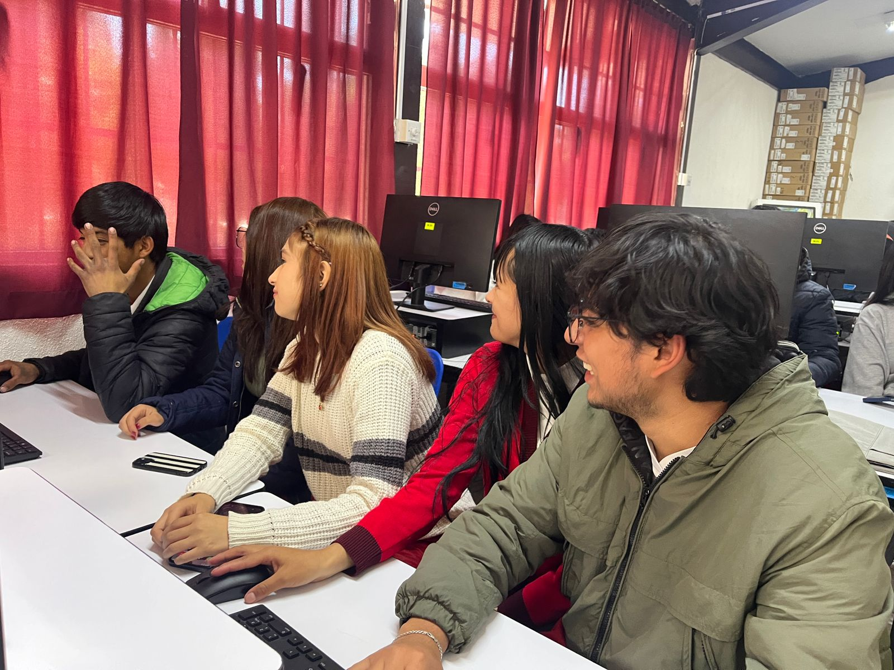

Nosotros
Nuestro equipo está conformado por 5 integrantes: dos programadores que se encargan del desarrollo técnico,
dos responsables de la documentación y un líder que coordina las tareas y decisiones.
La finalidad de este proyecto es modernizar el cultivo de jitomate en invernaderos,
integrando tecnología accesible para registrar ventas, monitorear producción y mantener un control preciso del proceso agrícola.
Más allá de lo técnico, este proyecto también busca ser una experiencia de aprendizaje colaborativo:
cada integrante aporta sus habilidades y juntos logramos un resultado que refleja esfuerzo, creatividad y compromiso con la innovación agrícola
(Foto tomada en la realizacion de este proyecto, la cual refleja perfectamente la quimica que hay en el equipo).
Productos
En Red-T cultivamos jitomates frescos y nutritivos, aprovechando la tecnología de invernaderos inteligentes para garantizar calidad en cada cosecha.
Tipos de jitomates más comunes: Saladette, Cherry, Raf, Kumato, Corazón de buey y Tomate en rama.
Fertilizantes utilizados: Nitrógeno, Fósforo, Potasio, Calcio, Magnesio y orgánicos como compost y humus de lombriz.

Saladette 🍅

Cherry 🍒

Raf 🌱

Kumato 🌑

Orgánico 🌿

NPK ⚗️
Imágenes
Galería de nuestro invernadero y proceso de cultivo.